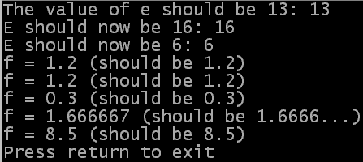

Zum Beispiel, nehmen wir die folgende Berechnung:
a = b + c - d + e * f * g / hDann lautet die Reihenfolge, in der die einzelnen Teile der Berechnung ausgearbeitet werden, wie folgt:
Glücklicherweise können Sie die Reihenfolge, in der die Berechnungen ausgeführt werden, verändern. Dies erfolgt durch das Platzieren von Klammern um die Teile der Berechnung, die zuerst ausgeführt werden sollen. Sie können auch Klammern innerhalb von Klammern platzieren, um eine bestimmte Reihenfolge der Auswertung zu erzwingen. Das Beispiel unten zeigt einige Beispiele der Anwendung von Operatoren-Vorrang und Klammern. Sie können den Quellcode auch hier finden.
OpenConsole()
a = 3
b = 5
c = 2
d = 7
; Verschiedene Operatoren - Multiplikation vor Addition
e = a + b * c
PrintN("The value of e should be 13: "+Str(e))
; Ändern der Berechnungs-Reihenfolge
e = (a + b) * c
PrintN("E should now be 16: "+Str(e))
; Verschiedene Operatoren des gleichen Ranges - von links nach rechts
e = a + b - c
PrintN("E should now be 6: "+Str(e))
DefType.f f
; Verschiedene Operatoren des gleichen Ranges - von links nach rechts
f = a / b * c
PrintN("f = "+StrF(f)+" (should be 1.2)")
; Die Reihenfolge der Auswertung ändern - ergibt jedoch das Gleiche, da in
; diesem Fall die Position der Klammern der regulären Berechnungsfolge entspricht.
f = (a / b) * c
PrintN("f = "+StrF(f)+" (should be 1.2)")
; Ändern der Berechnungsfolge
f = a / (b * c)
PrintN("f = "+StrF(f)+" (should be 0.3)")
; Verschachtelte Klammern
f = (a - ((b + d) / (c + d)))
PrintN("f = "+StrF(f)+" (should be 1.6666...)")
; Ohne Klammern
f = a - b + d / c + d
PrintN("f = "+StrF(f)+" (should be 8.5)")
PrintN("Press return to exit")
Input()
CloseConsole()
End

| Vorheriges Thema | Kapitel-Inhalt | Nächstes Thema |
|---|---|---|
| Multiplikation und Division | Benutzerhandbuch Inhalt | Ausdrücke |